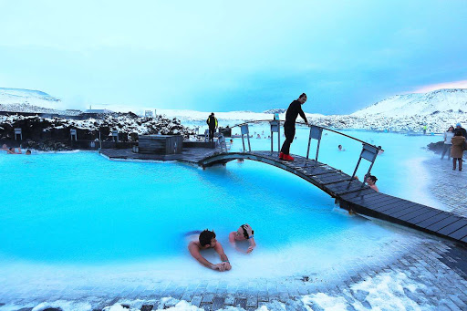
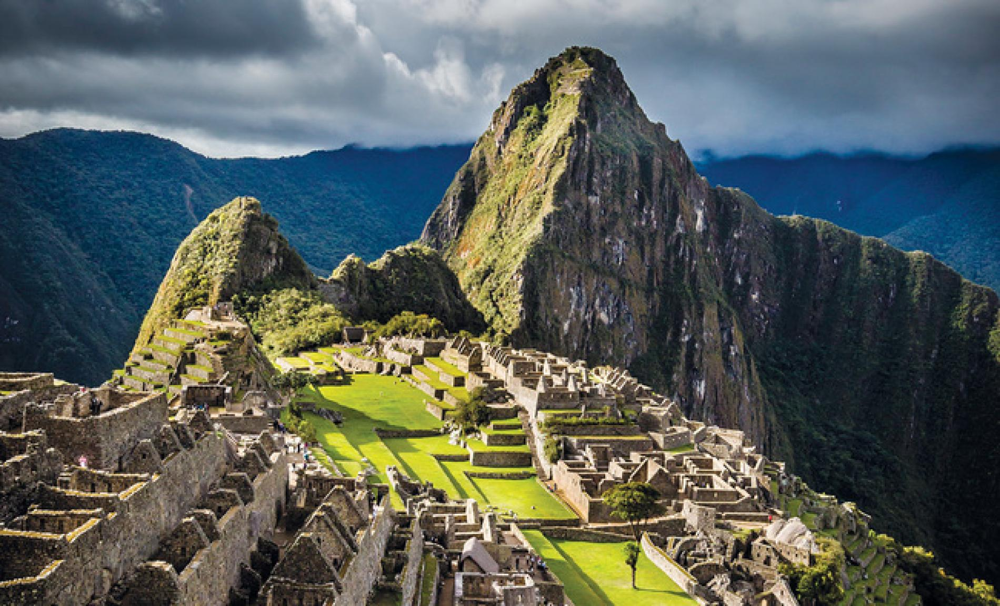
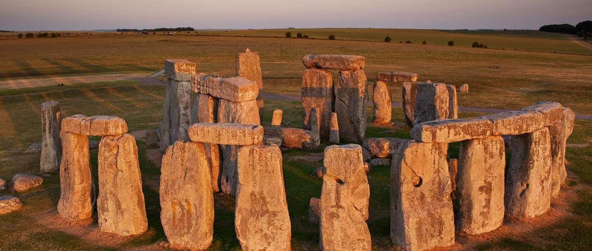
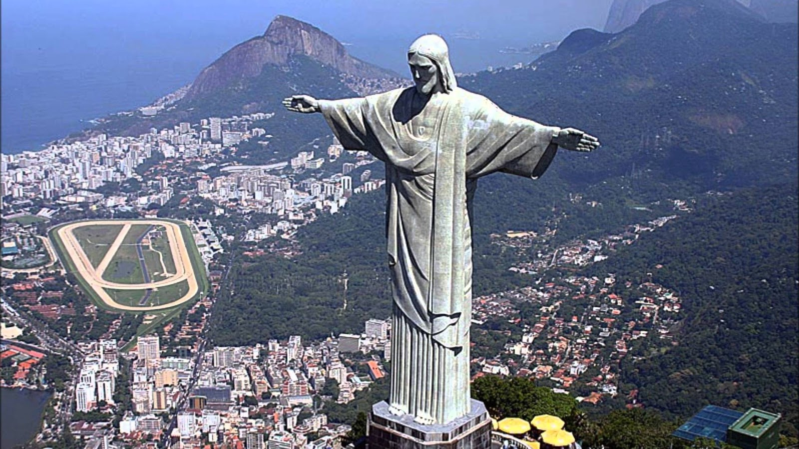
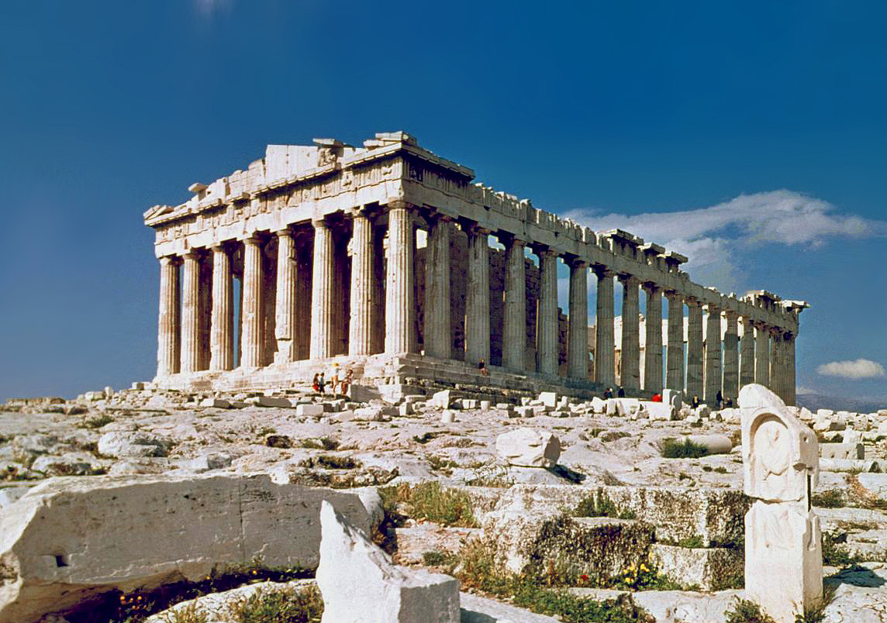
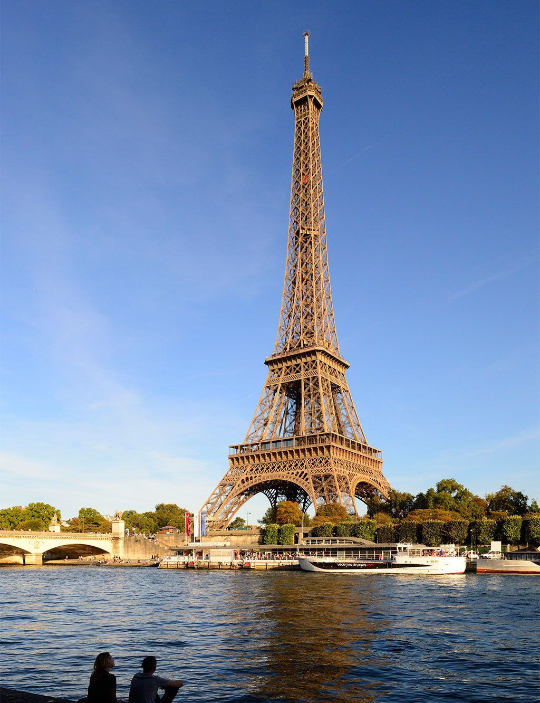
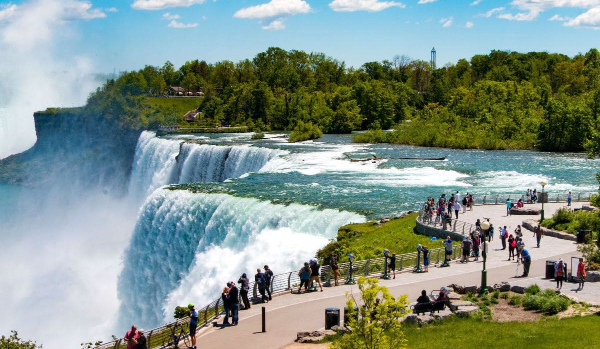

Sitios de Interes
- Piramides de Giza - Egipto
- La Laguna Azul - Islandia
- Machu Picchu - Perú
- Stonehenge - Reino Unido
- Cristo Redentor - Brasil
- Acrópolis de Atenas - Grecia
- Torre Eiffel - Francia
- La Gran Muralla - China
- Cataratas del Niágara - Canadá
- Puente Golden Gate - Estados Unidos
Puede ser sorprendente saber que un desierto desolado en el Medio Oriente se ha convertido en uno de los mejores destinos turísticos del mundo. A menos que consideres que muchas personas desean desesperadamente visitar la Gran Pirámide de Giza, una de las 7 maravillas oficiales del mundo antiguo. La tumba que fue construida alrededor de 2500 a. C. ahora es responsable de un espectacular 14.7 millones de visitantes por año.

Islandia es, sin duda, uno de los mejores destinos de viaje, y ha aumentado exponencialmente su interés en los últimos años. El destino n. ° 1 en Islandia es La Laguna Azul (The Blue Lagoon en ingles). El año pasado, tuvo un número récord de visitantes internacionales de 700,000. La Laguna Azul, es un spa geotérmico natural hundido en un campo de lava y es conocido por sus aguas curativas ricas en minerales. Las familias deben tener cuidado, ya que los niños menores de 2 años no están permitidos en las piscinas. Los niños entre las edades de 2 y 8 años deben usar flotadores.
¿Cuál es la mejor época para visitar Islandia? Si deseas ver las auroras boreales, te recomendamos que vayas en febrero, marzo, septiembre u octubre. En febrero la máxima temperatura puede llegar a ser de 4 ºC. Islandia es un país muy frío todo el año, así que sin importar el mes que vayas, prepárate con varias capas de ropa.
Los turistas cada vez se interesan más por América del Sur, ya que buscan lugares menos conocidos en el mundo. Machu Picchu es uno de los iconos más reconocibles del continente y las cifras del turismo lo reflejan. Después de recibir 1 millón de visitantes en 2016, los funcionarios de turismo decidieron reducir la asignación de entrada en los esfuerzos para salvar estas ruinas de desmoronarse.
El conjunto de monumentos históricos de piedra data de 2000 a 3000 aC. El punto de referencia icónico es uno de los símbolos más reconocibles del Reino Unido. Desde que Stonehenge se agregó a la lista del patrimonio mundial de la UNESCO en 1982, los visitantes anuales se han disparado a 1,3 millones de turistas por año. ¿Te gustaría visitar este atractivo turístico?
Probablemente hayas visto las fotos de tus amigos de brazos abiertos debajo de la enorme réplica blanca de Cristo. La estatua es conocida como Cristo Redentor y arroja su sombra sobre unos 1.8 millones de visitantes por año. El mejor o el peor día para Río de Janeiro, dependiendo de cómo lo mires, es el Domingo de Pascua. En los últimos años, esta atracción le dio la bienvenida a la enorme cantidad de 14,000 personas en la fecha de las festividades religiosas.
Estas antiguas ruinas de Atenas cuelgan sobre el acantilado escénico de Grecia. A pesar de los proyectos de restauración en curso, hordas de curiosos continúan acudiendo al sitio año tras año.La acrópolis era, literalmente, la ciudad alta y estaba presente en la mayoría de las ciudades griegas, con una doble función: defensiva y como sede de los principales lugares de culto. La de Atenas está situada sobre una cima, que se alza 156 metros sobre el nivel de mar. También es conocida como Cecropia en honor del legendario hombre-serpiente, Cécrope, el primer rey ateniense.
Situada en el corazón de París, la ciudad más romántica del mundo, la Torre Eiffel se ha convertido en un símbolo universal de los viajes. Una visita a la Torre Eiffel encabeza muchas listas de categorías, y no es sorprendente teniendo en cuenta que unos 7 millones de visitantes al año se toman selfies bajo el edificio de 81 pisos. No importa la hora en la que acudas, siempre hay gente admirando este ícono francés.
Considerada una de las estructuras más grandes hechas por el hombre en el mundo, la Gran Muralla de China se extiende por más de 13,000 millas. Al recibir 10 millones de turistas cada año, es beneficioso saber cuál es el mejor momento para visitarlo. El otoño es sin duda el momento más lindo para llegar, pero desafortunadamente aún es temporada alta de turismo. Sorprendentemente, junio es el momento con la menor cantidad de tráfico de personas, especialmente si deseas visitarla cuando no está nevando.

El atractivo turístico más popular del mundo, con más del doble de visitantes son las imponentes Cataratas del Niágara. Están ubicadas en la frontera de Nueva York y Ontario, Canadá, son un conjunto masivo de 3 cascadas. Un asombroso 6 millones de pies cúbicos de agua brotan sobre las cataratas cada minuto. El sitio actualmente recibe a 30 millones de turistas anualmente.
El Golden Gate (en español, Puerta Dorada) es un puente colgante situado en Estados Unidos, California, que une la península de San Francisco por el norte con el sur del condado de Marin, cerca de Sausalito. Golden Gate es también el nombre del estrecho en el cual el puente está construido, y recibe su nombre del estrecho en Constantinopla, llamado también la Puerta Dorada, ya que comunicaba Europa con Asia.

© 2020. Todos los derechos reservados.
Maracaibo - Venezuela.